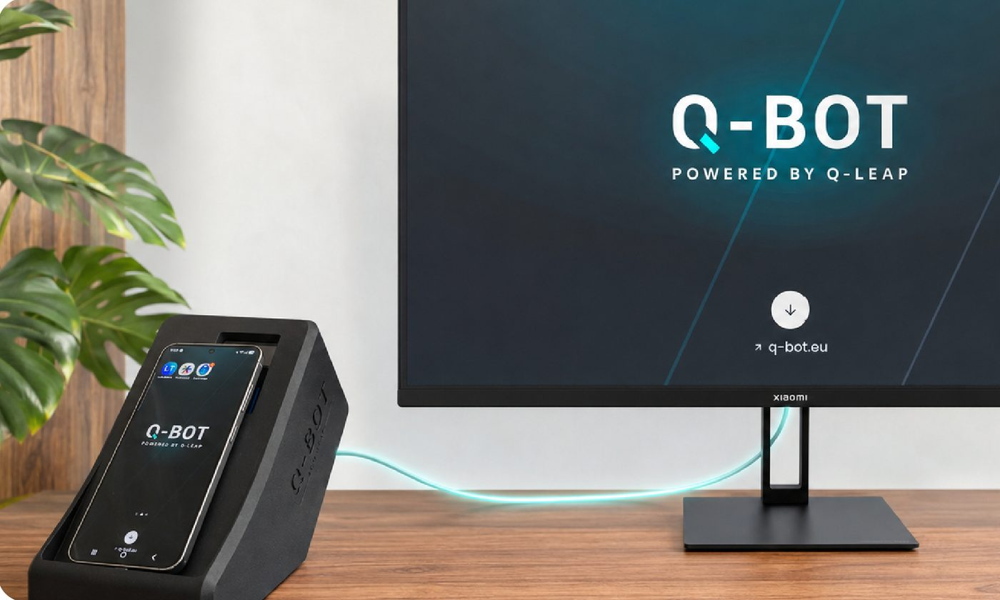

L'authentification forte ne bloque plus vos tests.
Vos campagnes vont au bout.
Q-Bot pilote la double authentification sur un vrai téléphone Android, à la demande de votre chaîne de tests. La dernière étape manuelle de vos campagnes disparaît, sans intervention humaine.

Ce que la 2FA vous coûte aujourd'hui
Deux chiffres, les vôtres. Le calcul se fait dans votre navigateur, rien n'est envoyé.
Trouver quelqu'un de disponible, déverrouiller le téléphone, lire le code, le saisir, relancer la campagne.
Temps rendu à vos équipes
36 h 45
par mois
Soit 5,3 journées de test, à sept heures la journée.
3 testeurs × 35 min × 21 jours ouvrés
Réserver une démoEt ce n'est que le temps compté. Une campagne nocturne qui s'arrête sur une étape 2FA à deux heures du matin ne coûte pas trente minutes : elle coûte une journée de retour d'information.
Comment Q-Bot automatise votre 2FA ?
Votre test appelle l'API de Q-Bot, ou l'app compagnon détecte seule la notification 2FA sur le téléphone. Q-Bot rejoue alors le scénario enregistré : appuis, glissements et temps d'attente arrivent sur l'écran physique de l'appareil. L'étape est franchie en quelques secondes et le test reprend.
Construction
Vous construisez le scénario dans l'interface web : une capture de l'écran 2FA, des points d'appui numérotés, des temps d'attente. Aucun script à écrire.
Déclenchement
Votre scénario de test appelle l'API de Q-Bot. Ou l'app compagnon déclenche seule, dès qu'une notification 2FA arrive sur le téléphone.
Exécution
Q-Bot rejoue le scénario sur le téléphone Android relié en USB : appuis, glissements et temps d'attente, par ADB.
Reprise
La 2FA est validée, la chaîne est débloquée, le test reprend exactement là où il s'était arrêté.
Opérationnel en 4 étapes
De la commande à vos premiers tests automatisés avec 2FA : comptez 48 à 72 heures.
Prenez rendez-vous
Réservez un créneau avec Sylvain Perez en ligne ou par téléphone. Démo incluse.
Prise en main personnalisée
Notre équipe prépare votre Q-Bot et configure l'accès à votre réseau selon vos besoins.
Livraison & installation
Q-Bot est livré chez vous. Branchez le boîtier, connectez-le au Wi-Fi, il est prêt.
Premiers tests en 2FA
Créez votre premier scénario via l'interface Web et déclenchez-le depuis Selenium, Cypress ou l'outil de votre chaîne.
Un seul abonnement, tout compris
Pas de frais d'installation, pas de surprise. Q-Bot s'inscrit dans votre budget test comme un outil standard.
Abonnement mensuel
Location tout compris, sans engagement
- Robot Q-Bot en location
- Assistance technique incluse
- Remplacement en cas de panne
- Mises à jour logicielles automatiques
- Interface Web + API REST incluses
- Support par email et téléphone
- Prise en main et formation incluses
Pourquoi la location ?
Parce que Q-Bot est un robot physique qui évolue. La location vous donne toujours la version la plus récente, mises à jour logicielles comprises, et elle couvre le risque matériel : en cas de panne, Q-Leap remplace le boîtier. Aucun engagement de durée, et la dépense reste une charge opérationnelle.
Ce que vous obtenez avec Q-Bot
Support réactif
L'équipe Q-Leap est disponible par email et téléphone. Délai de réponse garanti sous 24h ouvrées.
Remplacement garanti
En cas de panne non réparable à distance, nous renvoyons un robot fonctionnel. Aucune interruption prolongée.
Confidentialité totale
Q-Bot fonctionne sur votre réseau local. Les scénarios et leurs captures restent sur le boîtier. Aucune donnée ne quitte vos locaux.
Mises à jour continues
Le logiciel embarqué est mis à jour régulièrement pour prendre en charge les nouvelles applications 2FA du marché.
Fabriqué au Luxembourg
Q-Bot est conçu et assemblé dans les locaux de Q-Leap à Bertrange. Proximité garantie pour votre support.
Formation incluse
Prise en main complète avec votre équipe QA, pour maîtriser l'interface web et l'API dès le premier jour.
Cinq situations où la chaîne se débloque
Du parcours de connexion bancaire à la campagne de nuit, voici comment des équipes QA emploient Q-Bot.